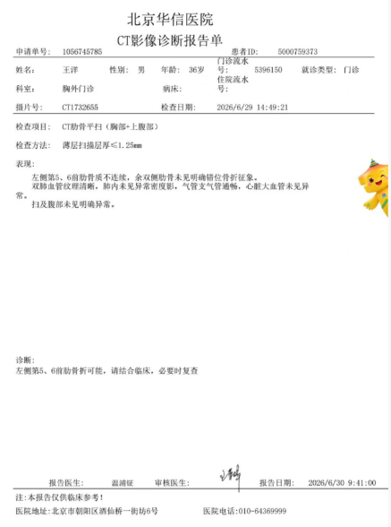

2026年6月24日
摔车了
2026年6月29日
去做了CT，第二天出结果

左侧第5、6前肋骨质不连续
第二天看一下结果，如果出结果了，问一下医生应该怎么办
医生的初步诊断是肋骨骨折，症状很像
症状
按压很疼，不敢翻身，起身，用力都会痛
2026年6月30日
还是没有好转，咳嗽，喷嚏对我来说都有很挑战。每次过路上的缓行带，我都非常慢。
我累的时候，喜欢伸懒腰，限制一张开双臂胸口就疼，让我没办法放松啊
索菲要来给我办理理赔，可是我中午没时间，下午才出结果，等都好了再说
2026年7月1日
感觉好一些了
索菲要来给我办理理赔
已经办了，赔了357，还挺感谢她的，起码没有白花钱
2026年7月4日
还是比较疼
2026年7月5日
已经好很多了，也可能因为吃了止疼片。抬胳膊还是不太敢，更别提打羽毛球了。
2026年7月9日
已经不吃止痛片了，只要动作浮动小，没什么太大的感觉。
2026年7月15日
刚刚感觉要好了，不知道为什么，还有挺疼的，尤其是起身的时候。有点沮丧，啥时候能彻底好啊
2026年8月1日
做个CT，复查一次，是否完全恢复
评论（0）
加载评论…
发表评论